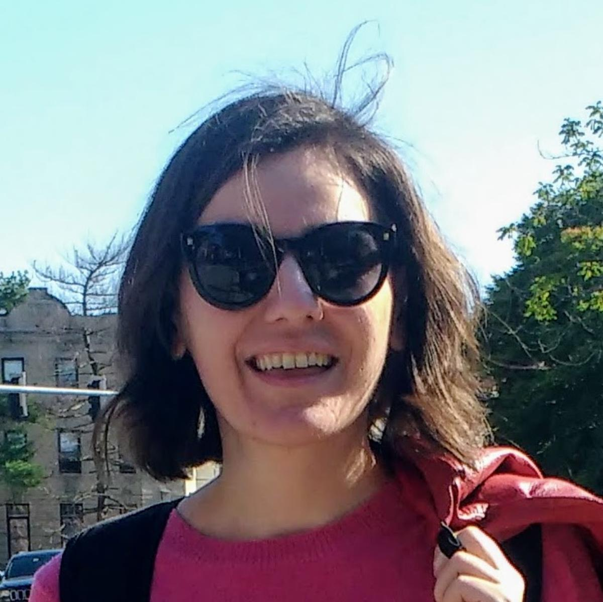

Teodora Mihoc

Quick intro
About and contact
I am a linguist with an interest in free and open source software, and I am currently working as a technical writer for the Juju team at Canonical. For more information about that and other, please read on below / view my resume / view my (slightly longer) CV, or visit me on LinkedIn, Google Scholar, LingBuzz or GitHub, or email me at te (dot) mihoc (at) gmail (dot) com or teodora (dot) mihoc (at) canonical (dot) com.
Professional timeline
| 08/2021-present | Technical writer, Juju, Canonical |
| 05/2021-present | Research affiliate (visiting scholar), Centre de Lingüística Teòrica, U Autonoma de Barcelona |
| 2007-present | Proofreader and copyeditor, academic English, freelance |
| 07/2019-07/2021 | Research affiliate (associate of the department), Dept of Linguistics, Harvard U |
| 01/2020-05/2020 | Teaching affiliate, Extension School, Harvard U |
| 09/2019-05/2020 | Advising and administrative affiliate (assistant head tutor), Dept of Linguistics, Harvard U |
| 09/2013-05/2019 | PhD student, Dept of Linguistics, Harvard U |
| 06/2016-05/2018 | Lab manager, Meaning and Modality Lab (PI: Kathryn Davidson), Harvard U |
| 09/2015-05/2017 | Teaching assistant and tutorial instructor, Dept of Linguistics, Harvard U |
| 09/2012-08/2013 | Research assistant (PI: María Luisa Rivero), Dept of Linguistics, U of Ottawa |
| 09/2011-08/2012 | MA student, Dept of Linguistics, U of Ottawa |
| 06/2012 | Student, North American Summer School of Logic, Language, and Information, U of Texas Austin |
| 09/2011-05/2012 | Teaching assistant, Dept of Linguistics, U of Ottawa |
| 09/2010-07/2011 | Mandarin Chinese language student, Beijing Language and Culture U |
| 05/2011-06/2011 | EFL instructor, The Affiliated High-School of Peking U |
| 10/2007-07/2010 | BA student, Applied Modern Languages English & French, Lucian Blaga U of Sibiu |
Quick summary
| degrees | PhD Linguistics, MA Linguistics, BA Applied Modern Languages English & French |
| awards | 12 awards, scholarships, or grants |
| fields | theoretical (formal, computational, experimental) linguistics (esp. semantics and pragmatics); applied linguistics; technical documentation |
| activities | research, teaching, reviewing, editing, academic English proofreading & copyediting, English-Romanian translation & interpretation, data collection, storage, preparation, exploration, visualization, experimentation, prediction; technical writing |
| research | 1 PhD thesis, 1 MA thesis, 1 BA thesis, 12 papers, 29 presentations |
| teaching | as primary instructor: 4 courses, 2 guest lectures, 2 workshops; as teaching assistant: 8 courses |
| service | reviewing: 1 NSF grant proposal, 1 journal paper, 10 conference abstracts; editing: 1 volume; proofreading for open access linguistics publishers: 250 pp.; event organization: 2 events; outreach: 4 events |
| technical | Linux, LaTeX, Emacs, R, Python, Bash, Git >> JavaScript, Haskell, SQL |
| languages | Romanian >> English >> French >> Spanish >> German >> Bangla, Esperanto, Italian >> Mandarin Chinese, Modern Greek, Russian |
Education
| 2013-2019 | Harvard U: PhD Linguistics |
| 2011-2012 | U of Ottawa: MA Linguistics |
| 16-22/06/2012 | U of Texas at Austin: North American Summer School of Logic, Language, and Information (NASSLLI) |
| 2010-2011 | Beijing Language and Culture U: Mandarin Chinese language course |
| 2007-2010 | BA Applied Modern Languages and French, Lucian Blaga U of Sibiu |
| Spring 2009 | Aristotle U of Thessaloniki: Erasmus exchange term |
Awards and grants
| 08/2021 | (Declined.) Juan de la Cierva 2-year Postdoctoral Fellowship, Spanish Ministry of Science & Innovation. |
| Spring 2019 | Conference travel grant, Harvard Graduate Student Council. $750. |
| 2018-2019 | Dissertation completion fellowship, Harvard U. $36,472. |
| 2015-2016 | Sosland Family Graduate Fellowship, Harvard U. $9,435. |
| 2014-2015 | Sosland Family Graduate Fellowship, Harvard U. $7,924. |
| 2013-2014 | Douglas Dillon Fellowship, Harvard U. $25,300. |
| 2011-2012 | Differential admission scholarship, U of Ottawa. $18,450. |
| 2010-2011 | Study abroad scholarship, Confucius Institute Sibiu |
| 2007-2010 | Merit scholarships, Lucian Blaga U of Sibiu |
| Spring 2009 | Study abroad scholarship, Erasmus Mundus |
Research
In my Linguistics research I tackle issues related to unifying free choice, polarity sensitivity, and scalarity across different categories of meaning—numerals, disjunction, indefinites, aspectual operators, etc.; and evidentiality and modality.
Papers (publications, manuscripts, theses)
(* = first author / equal contribution) (xr = peer-reviewed abstract; xR = peer-reviewed abstract and paper; xt = thesis)
| under reviewR | Teodora Mihoc. Aspectual operators: Temporality, evaluativity, and polarity sensitivity. |
| to appearr | Teodora Mihoc. Negative comparison, or how to be judgmental and ignorant with scalar alternatives. In Proceedings of Penn Linguistics Conference (PLC) 45. |
| to appearr | Teodora Mihoc. Modified numerals and polarity sensitivity: Between O(nly)(DA) and E(ven)(SA). In Proceedings of Sinn und Bedeutung (SuB) 25. |
| to appear | Aurore Gonzalez* and Teodora Mihoc*. A neo-Carlsonian approach to bare plural nominals in Romanian and French. In J. Sturm (ed.), Harvard Working Papers in Linguistics 14. |
| 2021r | Teodora Mihoc* and Kathryn Davidson. Superlative-modified numerals and negation: A multiply negotiable cost. In A. Beltrama, F. Schwarz, A. Papafragou (eds.), Proceedings of Experiments in Linguistics Meaning (ELM) 1, pp. 212-223. |
| 2020r | Teodora Mihoc. Ignorance and anti-negativity in the grammar: or/some and modified numerals. In M. Asatryan, Y. Song, and A Whitmal (eds.), Proceedings of The Annual Meeting of the North East Linguistic Society (NELS) 50. |
| 2019 | Teodora Mihoc. Ignorance and polarity sensitivity in the grammar: From disjunction and indefinites to numerals. Manuscript. |
| 2019t | Teodora Mihoc. Decomposing logic: Modified numerals, polarity, and exhaustification. PhD thesis, Harvard U; Committee: Gennaro Chierchia (chair), Kathryn Davidson, Anamaria Fălăuş, Roger Schwarzschild. |
| 2019r | Teodora Mihoc*, Diti Bhadra, and Anamaria Fălăuş. Epistemic modals, deduction, and factivity. In K. Blake, F. Davis, K. Lamp, and J. Rhyne (eds.), Proceedings of Semantics and Linguistic Theory (SALT) 29, pp. 351-70. |
| 2017 | Akshat Agrawal* and Teodora Mihoc*. Numeral-negation scope endorsement asymmetry: An alternative Rational Speech Act (RSA) model. Manuscript, Harvard U. |
| 2015 | Georgian tu: A ka particle. Manuscript, Harvard U. |
| 2014 | Teodora Mihoc. The Romanian future-and-presumptive auxiliary. In B. Buccola, M. Hamilton, A. McKillen, and J. Tanner (eds.), McGill Working Papers in Linguistics 24(1), pp. 64-80. |
| 2013 | Teodora Mihoc. The Romanian Presumptive Mood: The key to the Romanian will-Future. Cahiers linguistiques d'Ottawa/Ottawa Papers in Linguistics, 38. |
| 2012t | Teodora Mihoc. The Romanian Presumptive Mood: Inferential evidentiality and upper-end degree epistemic modality. MA thesis, U of Ottawa. Advisor: Ana Arregui. |
| 2010t | From Plato to Derrida: The dissolution of the author. BA thesis, Lucian Blaga U of Sibiu. |
Presentations (talks and posters)
(* = first author / equal contribution) (A = abstract; H = handout; P = poster; S = slides; V = video) (xr= peer-reviewed abstract, xi = invited)
| 2021i | Teodora Mihoc. Aspectual operators: Temporality, evaluativity, and polarity sensitivity. Talk @ Grup de Lingüística Formal (GLiF), U Pompeu Fabra, Nov 25. (S) |
| 2021r | Teodora Mihoc. Polarity sensitivity across domains. Talk @ Workshop: The meaning of functional categories in the verbal / sentential domain (Neg / Asp / Voice / Deg / little v), Universitat Autònoma de Barcelona, June 17-18. (S) |
| 2021i | Teodora Mihoc. Ignorance and positive polarity in indefinites, disjunction, and numerals. Talk @ Centre de Lingüística Teòrica, Universitat Autònoma de Barcelona, May 21. (S) |
| 2021i | Teodora Mihoc. From Chomsky through Confucius to Montague and Grice (Or what I've been up to since I left LBUS). Talk @ Lucian Blaga U of Sibiu, May 17. |
| 2021r | Teodora Mihoc. Singular, plural, modal. Poster @ Linguistic Symposium on Romance Languages (LSRL) 51, U of Illinois at Urbana-Champaign (online), Apr 29-May 1. (A) (P+V) |
| 2021r | Teodora Mihoc. Aspectual operators and polarity sensitivity. Talk @ Generative Linguistics in the Old World (GLOW) 44, GLOW Board (online), Apr 15-17. (A) (S) |
| 2021r | Teodora Mihoc. Negative comparison between exactness, ignorance, and evaluativity. Talk @ Penn Linguistics Conference (PLC) 45, U of Pennsylvania (online), Mar 19-21. (A) (S) |
| 2020r | Teodora Mihoc. Epistemic indefinites, number marking, and certainty. Talk @ Sensus 1, UMass Amherst, Apr 18-19 Sep 26-27. (A) (S) |
| 2020r | Teodora Mihoc* and Kathryn Davidson. Superlative-modified numerals and negation: A negotiable cost. Talk @ Experiments in Linguistic Meaning (ELM) 1, U of Pennsylvania, June 10-12 Sep 22-24. (A) (S+V) |
| 2020r | Teodora Mihoc. Modified numerals and polarity sensitivity: Between O(nly) and E(ven). Talk @ Sinn und Bedeutung (SuB) 25, U College London / Queen Mary U of London, Sep 3-5. (online) (A) (S+V) |
| 2019r | Teodora Mihoc. Ignorance and anti-negativity in the grammar: [or/some] and modified numerals. Talk @ The Annual Meeting of the North East Linguistic Society (NELS) 50, MIT, Oct 24-27. (A) (S+H) |
| 2019r | Teodora Mihoc*, Diti Bhadra, and Anamaria Fălăuş. Epistemic modals, deduction, and factivity. Talk @ Semantics and Linguistic Theory (SALT) 29, UCLA, May 17-19. (A) (S) |
| 2019r | Teodora Mihoc. Ignorance and polarity sensitivity in modified numerals and beyond. Poster @ Workshop: The meaning of numerals: cognitive, experimental, and semantic perspectives, ZAS, Berlin, Mar 27-28. (A) (P) |
| 2018r | Teodora Mihoc. The alternatives of bare and modified numerals. Talk @ Rencontres d'Automne de Linguistique Formelle (RALFe), U Paris 8 / CNRS, Dec 6-7. (A) (S) |
| 2018i | Teodora Mihoc. Modified numerals between polarity and valence. Talk @ Laboratoire de Linguistique de Nantes, CNRS/University of Nantes, Dec 3. (S) |
| 2018i | Teodora Mihoc. An extent-based GQT-style unified implicature account of bare and modified numerals. Talk @ Institute for Logic, Language, and Information, U of Amsterdam, June 12. (S) |
| 2018 | Teodora Mihoc. Scope asymmetry, QUDs, and exhaustification. Talk @ LingedIn, Harvard U, May 4. (H) |
| 2017 | Teodora Mihoc. Decomposing bare and modified numerals. Talk @ LingedIn, Harvard U, Dec 7. |
| 2017r | Teodora Mihoc* and Kathryn Davidson. Testing a PPI analysis of superlative modified numerals. Talk @ Experimental Pragmatics (XPrag) 7, University of Cologne, June 21-23. (A) (S) |
| 2017r | Aurore Gonzalez* and Teodora Mihoc*. Bare nominals in French and Romanian. Talk @ Linguistic Symposium on Romance Languages (LSRL) 47, U of Delaware, April 20-23. (H) |
| 2016 | Teodora Mihoc. More evidence of heterogeneity in the class of comparative and superlative numeral modifiers. Talk @ Language and Cognition group meeting, Harvard U, Nov 29. |
| 2016 | Teodora Mihoc. More evidence of heterogeneity in the class of comparative and superlative numeral modifiers. Talk @ Experimental Syntax & Semantics Lab / Language Acquisition Lab Meeting, MIT, Oct 18. |
| 2016 | Teodora Mihoc. More evidence of heterogeneity in the class of comparative and superlative numeral modifiers. Talk @ LingedIn, Harvard U, Sep 30. |
| 2016 | Teodora Mihoc. Confessing ignorance. Talk @ LingedIn, Harvard, April 20. |
| 2015 | Teodora Mihoc. Romanian Bare Nominals and Derived Kind Predication. Talk @ Southern New England Workshop on Semantics (SNEWS), Harvard U, Nov 21. |
| 2015 | Teodora Mihoc* and Alexander Klapheke. Two sets of alternatives for numerals. Talk @ East Coast Graduate Student Workshop (ECO-5), Harvard U, Apr 11. |
| 2014i | Teodora Mihoc. The broader epistemic future. Talk @ Commitment phenomena through the study of evidential markers in Romance languages, University of Neuchâtel, Sep 5. (S) |
| 2013 | Teodora Mihoc. Romanian presumptivity: The future case in point. Talk @ Southern New England Workshop on Semantics (SNEWS), MIT, Nov 16. |
| 2013 | Teodora Mihoc. The Romanian presumptive mood and the key to the Romanian will-future. Talk @ Toronto-Ottawa-Montreal Workshop on Semantics (TOM) 6, McGill U, Mar 23. (S) |
Teaching
(F = Fall; S = Spring; W = Winter)
- as instructor
| S2020 | Introduction to Linguistics (full semester course). Harvard Extension School. (syllabus) |
| S2017 | The semantics and pragmatics of numerals (half-semester sophomore tutorial). Harvard U. (syllabus) |
| S2016 | Logic in Linguistics (half-semester sophomore tutorial). Harvard U. (syllabus) |
| F2015 | Inquisitive Semantics (half-semester junior tutorial). Harvard U. (syllabus) |
- as teaching fellow
| F2017 | Semantic Theory I. Instructor: Kathryn Davidson. Harvard U. |
| F2017 | Language, Structure, and Cognition. Instructor: Kathryn Davidson. Harvard U. |
| F2016 | Language, Structure, and Cognition. Instructor: Kathryn Davidson. Harvard U. |
| S2016 | Language, Structure, and Cognition. Instructor: Kathryn Davidson. Harvard U. |
| F2015 | Syntactic Theory I. Instructor: C.-T. James Huang. Harvard U. |
| W2012 | Writing Systems. Instructor: Marie-Claude Séguin. U of Ottawa. |
| W2012 | Les langues dans le monde. Instructor: Andrés Pablo Salanova. U of Ottawa. |
| F2011 | Introduction to Linguistics. Instructor: Robert Truswell. U of Ottawa. |
- as guest lecturer
| 20/07/2016 | Entailment and monotonicity \hfill (course: The Science of Language; instructor: Jenny Lee; Harvard U) |
| 01/2014 | Syntax bootcamp; Semantics bootcamp; \LaTeX{} for Linguists \hfill (Lucian Blaga U of Sibiu) |
- as workshop leader
| 25/04/2017 | A beginner's introduction to experiments \hfill (with Aurore Gonz\'{a}lez; Harvard U) |
| 28/09/2016 | Introduction to \LaTeX{} \hfill (with Laurence B-Violette; Harvard U) |
Professional service | Linguistics
- reviewing (for abstracts, number indicates number of actual abstracts)
| grant proposals | National Science Foundation (NSF) (x1) |
| papers | Borealis—An International Journal of Hispanic Linguistics (x1) |
| abstracts | Sinn und Bedeutung (SuB) (x 4) |
| Syntax, Phonology and Language Analysis (SinFonIJA) (x 1) | |
| Experiments in Linguistic Meaning (ELM) (x 5) |
- editing
| 2021 | Member of the editorial committee for Proceedings of Experiments in Linguistic Meaning (ELM) 1. |
- proofreading for open access linguistics publishers
- Language Science Press (chapters from 5 volumes, altogether 250 pp.)
- event organization
| 2015 | Co-organizer, Southern New England Workshop on Semantics (SNEWS) @ Harvard U (Nov 21) |
| 2012 | Student helper, Workshop on Modality @ U of Ottawa (Apr 20-21) |
- outreach
| 2019-20 | Outreach events organizer as Assistant Head Tutor at Harvard Linguistics |
| 2018 | Interviewee, article on experimental linguistic research (Harvard Gazette, Feb 21) |
| 2017 | Linguistics referee, US national high-school research competition (MIT INSPIRE) |